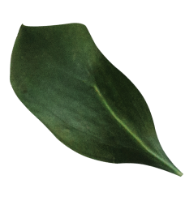
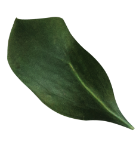

Среди бесконечного разнообразия чая есть сорта, имеющие особое значение. И только они таят особый магнетизм, который заставляет следовать совету Оскара Уайльда, считавшего, что существует лишь единственный способ противостоять искушению – поддаться ему.
002


Неподвластные мимолетному дыханию популярности, сорта чая обладают той высокой мерой вкуса, которая рождается из сочетания традиций, совершенства обработки чайных листьев и красоты вечно изменчивой природы.
003